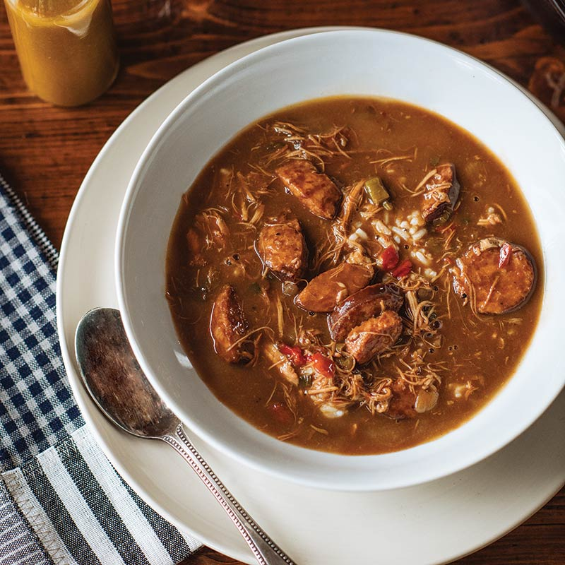

Chicken Andouille Gumbo

Description
Everyone's mama's or grandma's gumbo is the best, and everyone's gumbo is different. This recipe is a mixture of a few different recipes I have learned over the years. I have included some key elements that take extra time for extra flavor, but you
can always substitute for other store bought items for a quicker gumbo. This recipe usually takes me one whole day, or two depending on when I make the stock. It always tastes better on day two, so I highly recommend making it the day before you
want to serve.
Ingredients
Makes about 2 gallons. Serves 12-15 people
- 2 yellow onions
- 2 bell peppers
- 4-5 stalks of celery
- lots of garlic
- stock (enough to fill the pot)
- 1 cup oil
- 1 3/4 cups of flour
- 2 lbs andouille (gotta be the good stuff from Laplace)
- 2-3 lbs chicken (I like dark meat, but breasts are fine)
- worcestershire
- hot sauce
- bay leaves
Steps
- (OPTIONAL) Prepare the stock - see stock recipe
- Chop all the vegetables and sausage
- Heat your pot to med-high heat and sear the sausage
- Remove sausage from the pot and add oil and flour
- Stir the roux so it doesn't burn. Stop at the color you desire. Darker rouxs have richer flavor
- Once your roux is good, add vegetables (minus garlic) and saute a few minutes
- Add garlic. Saute until fragrant.
- Add some stock so the roux doesn't burn.
- Add all your meat.
- Add more stock until desired consistency. The sweet spot is not too watery but not too thick.
- Add bay leaves, hot sauce, and worcestershire.
- Simmer 2-3 hours. If you added too much liquid, just simmer with top off.